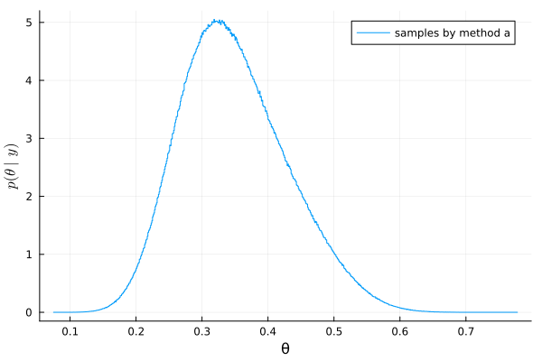
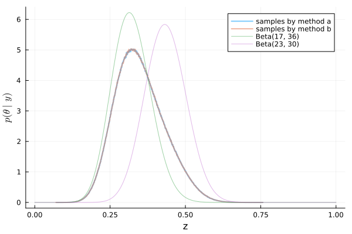

Exercise 4.4 Solution - Hoff, A First Course in Bayesian Statistical Methods
標準ベイズ統計学 演習問題 4.4 解答例
a)
answer
From the result in 3.4 d) ii, the posterior distribution when using the mixture prior distribution follows \(\frac{3}{4} \text{Beta}(17, 36) + \frac{1}{4} \text{Beta}(23, 30)\).
The plot is as follows.
using Distributions using Random using LaTeXStrings using Plots mm = MixtureModel( [Beta(17, 36), Beta(23, 30)], [0.75, 0.25] ) mm_samples = rand(mm, 10_000_000) histogram( mm_samples, label="mixture model posterior" , bins=1000, normalize=:pdf, xlabel="θ", ylabel=L"p(\theta \mid y)" )
:RESULTS:

The 95% quantile-based posterior confidence interval can be approximated using sample quantiles as follows.
quantile(mm_samples, [0.025, 0.975])
2-element Vector{Float64}:
0.2098971517541345
0.5230478539666719
b)
answer
w = 0.75 z_mc = [] for s in 1:10_000_000 x = rand(Bernoulli(w), 1) dist = x == 1 ? Beta(17, 36) : Beta(23, 30) z = rand(dist) append!(z_mc, z) end
:RESULTS:

どちらも同じ形状の分布になる！ (Same shape distribution!)